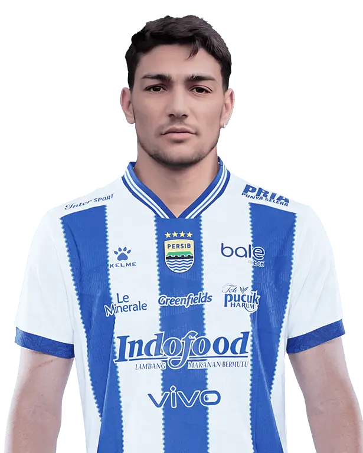

 Persib Bandung
Persib Bandung
Federico Barba
- Tanggal Lahir: 1 September 1993 (Roma, Italia)
- Posisi: Bek Tengah
- Nomor: 5
- Karier Sebelumnya: Roma, Empoli, Real Valladolid, Chievo, Benevento, Pisa
- Status: Pemain Persib Bandung (2024–sekarang)
Karier Sepak Bola
- AS Roma (2009–2012, akademi)
- Empoli (2012–2017)
- Stuttgart (pinjaman, 2016)
- Real Valladolid (2017–2018)
- Chievo Verona (2018–2021)
- Benevento (2021–2022)
- Pisa (2022–2024)
- Persib Bandung (2024–sekarang)
Statistik
2
Penampilan Klub
0
Gol
0
Assists
0
Caps Timnas
Internasional
Italia U-21
Prestasi
- Pernah membela Timnas Italia U-21
- Andalan Empoli di Serie A (2014–2017)
- Pemain asing Persib Bandung musim 2024/2025
Bio Singkat
Federico Barba adalah bek tengah asal Italia dengan pengalaman bermain di Serie A, Serie B, La Liga, dan Bundesliga. Ia dikenal sebagai pemain bertahan yang solid, tangguh dalam duel udara, serta mampu mengatur lini belakang dengan baik. Pada musim 2024/2025, Barba resmi bergabung dengan Persib Bandung untuk memperkokoh pertahanan Maung Bandung.